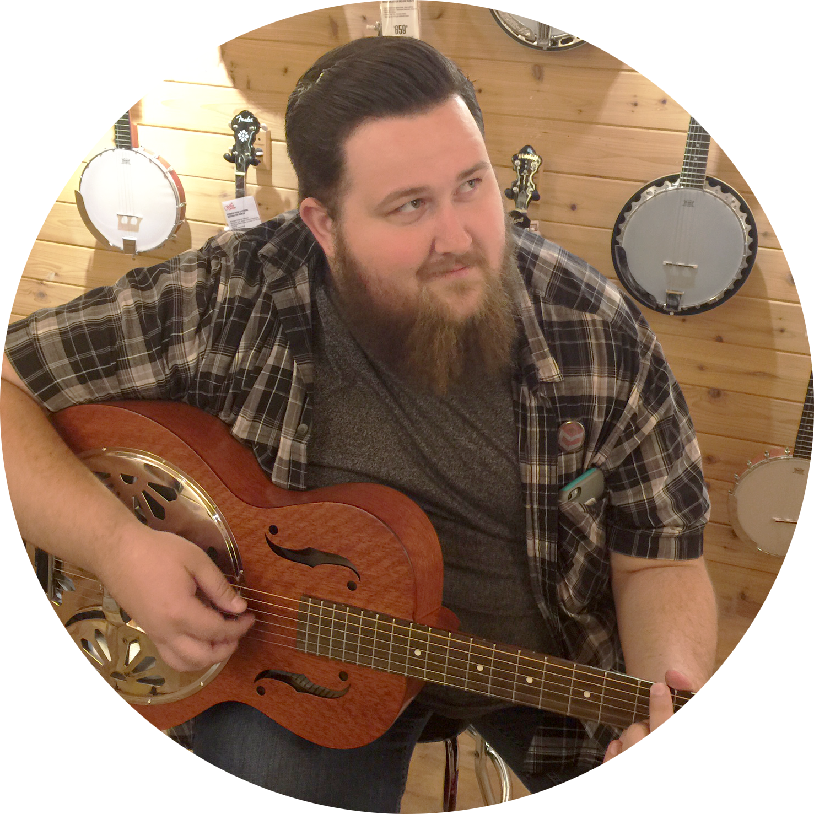

COLTON
SIMMONS
CAMPBELL

designer
CONTACT


I’m a graphic designer who has been involved in a wide variety of work over my career; everything from posters to tee shirts, wedding invitations to business cards, and
logos to complete branding . What started as a hobby quickly turned into income as I started freelance work.I’ve been working in and around graphic design for 7+ years. I’m the son of a graphic designer and a classically trained musician, and because of this, I’ve developed a passion for anything creative. I married a wonderful woman a little over a year and a half ago, and in my spare time, you can find me playing guitar, or attempting photography, or trying to build a new piece of furniture for my home.
Sophomore Student Council - Activities Director
Junior Class President - Student Executive Council
Senior LDS Seminary Council
Founder and President of Musicians Service Club
Graduated May 2009 with Diploma
Graduated with 3.5 GPA
Recipient of Leadership Scholarship
Recipient of Music Scholarship
Charity Event and Fundraising Coordinator
3.7 GPA


Proficient in all of the above, and extremely eager to learn new things, programs, and techniques. I enjoy drawing, and did a brief stint in photography. I love all things creative, and pursue them with the utmost passion.
Using a combination of Graphic Design skills and Customer Service knowledge, I work with brides one on one to make sure they have the best wedding invitation possible. Aside from that, template building and light coding were required. During my time here, our catalogue has grown exponentially, and customer satisfaction is at an all time high. Making customers happy is the main objective, and creating the products necessary for them to do so is a daily occurrence.
In addition to freelance Graphic Design projects over the last few years, I have worked as a part-time Graphic Designer and Creative Lead for Mavin Headwear. Shirts, hats, and general apparel designs; as well as promotional advertising have all been created either personally by myself, or by a member of my team. Branding, iconography, and current trends are the focus for our work, and since starting there, the brand has grown immensely, and continues to do so.
As a Sales and Customer Service Associate, a thorough knowledge and understanding of all Apple Products and Services were essential. Through the use of this knowledge, and extensive training, the largest part of this job was helping customers find creative solutions to any technological problems they faced; whether it be finding the product that was right for them, or fixing something they already owned. Some repair knowledge was also essentialin diagnosis and fixing of products.
Chrysalis is a program based in meeting the needs of the mentally and behaviorally disabled. As a member of their Day Program Sta, I was responsible for the daytime activities for 4-8 clients in the program, daily. Responsibilities included medication handling and distribution, diligent record keeping, and client safety. As a member of their Crisis Team, if a client needed to be restrained or calmed I was the person called.
Through the use and training of specialized software, I captioned telephone calls for members of the hearing impaired and deaf community. As part of a team as we worked to achieve goals, while diligently working towards my own individual goals.